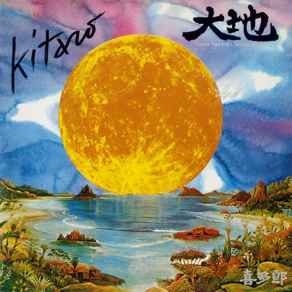

LP
From The Full Moon Story
Kitaro
Media: — · Sleeve: —
—
Collection
Discogs SuggestedCA$26.70
Discogs MedianCA$26.70
Discogs HighCA$26.70
- Year
- 1989
- Label
- Polydor, Polydor
- Catalog #
- 810 945-1, 810945-1
- Country
- DEGermany
- Genre / Style
- Electronic · New Age, Ambient